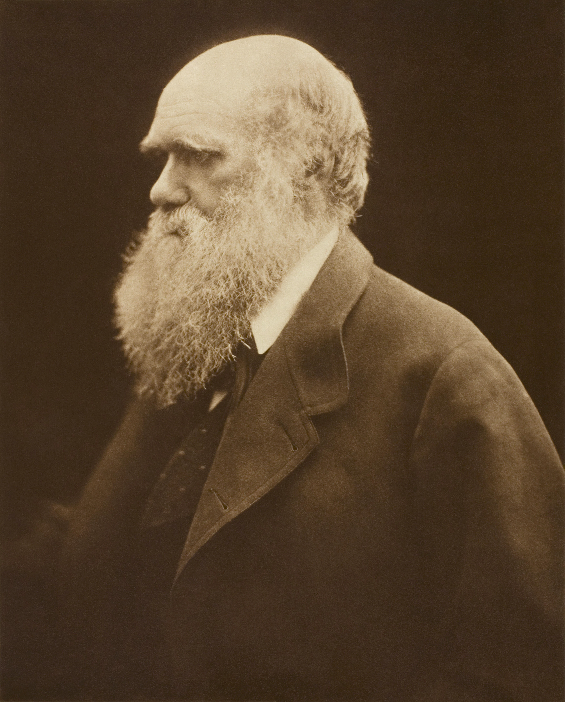

~ julia margaret cameron ~
Pomona (Alice Liddell), 1872
The Angel at the Tomb (Mary Hillier), 1870
Mary Mother (Mary Hillier), 1867
King Lear Allotting His Kingdom to His Three Daughters, 1872
The Parting of Sir Lancelot and Queen Guinevere, 1874

Charles Darwin, 1868
back